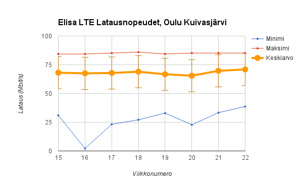
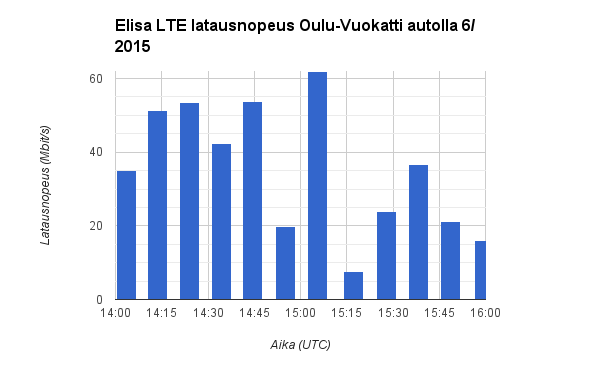

LTE käytännössä - havaintoja kotoa ja matkalta
Kävin lauantaina puhumassa LTE-kokemuksistani Itäsuomalaisten radioharrastajien kesäpäivillä Vuokatissa, Sotkamossa. Aiheenani oli “LTE käytännössä - vieläkö kiinteää yhteyttä tarvitaan?” Otsikosta voi päätellä yleiskuvan tähänastisista kokemuksistani.
LTE kiinteän yhteyden korvaajana kotona
Muutettuani takaisin Suomeen Yhdysvalloista en hankkinut kiinteää laajakaistaa vaan olen käyttänyt Elisan LTE-yhteyttä ainoana kotiyhteytenä. Voin nyt puhua LTE:stä miltei vuoden kokemuksella kiinteän laajakaistan korvikkeena.
Kotiosoitteeseeni sai ainoastaan 24M ADSL-yhteyttä kun muutin takaisin. ADSL:ssä paluukaistan nopeus on vain 1 Mbit/s, mikä ei riitä minulle sillä muun muassa varmuuskopioin tiedostoni Internetin kautta. Tutkin vaihtoehtoja ja päädyin siihen tulokseen että minun kannattaa ainakin kokeilla LTE-liittymää. Jos se ei olisi toiminut riittävän hyvin, olisin voinut kuitenkin ottaa kiinteän yhteyden rinnalle ja käyttää LTE-liittymää matkakäytössä.
| Liittymä | Nopeus | Hinta, 24kk määräaikainen |
|---|---|---|
| Saunalahti 4G Super | 100 Mbit/s LTE | 19,90 €/kk (norm. 29,80 €/kk) |
| DNA Tuplakaista 40 (DSL) | 40 Mbit/s VDSL2 | 54,90 €/kk (norm. 74,80 €/kk) |
Liittymien hintaero tuntuu käsittämättömältä, sillä käyttäjän kannalta erona on että LTE vaikuttaa olevan sekä halvempi että nopeampi kuin kiinteä yhteys, minkä lisäksi sitä ei ole sidottu paikkaan.
Esitystäni varten mittasin kotiyhteyteni toimintaa. Seuraavat mittaukset on tehty kotonani Oulun Kuivasjärvellä välillä 15.4.2015 – 5.6.2015. Latausnopeus on kunkin viikon keskiarvo; 100 MB tiedosto on ladattu kerran tunnissa ja nopeus kirjattu, siis 24x7 = 168 latausta (16,8 GB) per piste.

Kuten kuvaajasta hyvin näkee, keskimääräinen latausnopeus ei juuri vaihtele. Keskiarvo jää huipusta uskoakseni pääasiassa siksi että jos yhteydessä ei ole kulkenut liikennettä hetkeen, nopeus kiihtyy pikkuhiljaa eli huippunopeutta ei saavuteta kuin myöhemmin latauksessa. Nopeudet ovat erittäin vakaita. Minimiä ei kannata tuijottaa, koska yksittäinen näyte sotkee niin paljon. Kuvaajan minimi on nimittäin huonoin viikon 168 latauksesta.
Vasteaika on mitattu fpingillä 1 paketti kerran 10 sekunnissa samalla aikavälillä.
| Latausnopeus | Vasteaika | |
|---|---|---|
| Keskiarvo | 68 Mbit/s ± 14 Mbit/s | 46 ms ± 25 ms |
| Maksimi | 86 Mbit/s | 8150 ms |
| Minimi | 2 Mbit/s | 27 ms |
Mitä huonoa mobiililaajakaistassa?
IPv4-osoitteiden loppuminen ilmenee ensimmäisenä niin että operaattorit eivät jaa julkisia reitittyviä IP-osoitteita mobiililaajakaistoihin tai kännyköihin. Käytännössä tästä seuraa että suorat peer-to-peer-yhteydet eivät onnistu. Miten asia ilmenee riippuu kustakin sovelluksesta.
Peleissä nykyään useimmat pelit järjestävät palvelimet eikä niitä enää tarvitse pyörittää kotiyhteydellä. Useimmille mahdolliset ongelmat ilmenevät esim. Skype-puhelun huonossa kuvanlaadussa sillä Skype osaa välittää liikenteen kyllä vaikka molemmat käyttävät käyttävät osoitteenmuunnosta (NAT), mutta tällöin yhteyden nopeus on todella rajattu. Omien kokemusten kanssa joskus, ei aina, ei kaikkien kanssa, erityisesti näytön jakaminen tai videopuhelu saattavat tökkiä. Ongelmalliseksi tavalliselle käyttäjälle asian tekee sen vaikea ennustettavuus - uskoisin että tavallinen käyttäjä syyttäisi asiasta Skypeä.
Tavallisen kuluttajan kannalta osoitteiden loppuminen ei luultavasti näy muuten kuin ym. erikoisina ongelmina. Ongelmalla ei ole sikäli tekemistä verkkotekniikan kanssa vaan ongelma koskee koko Internetiä. Ratkaisu ongelmaan on IPv6, mutta se vaatii operaattorien lisäksi tukea myös kaikilta sovelluksilta ja muilta verkon käyttäjiltä, esim. niiltä joille Skypellä soitan.
LTE ei pysty korvaamaan valokuitua kapasiteetissa. Vaikka ruuhkattomassa solussa nopeudet voivatkin olla samaa luokkaa kuin nopeimmissa kiinteissä liittymissä, tosiasia on että LTE:n maksiminopeus on 150 Mbit/s per sektori per kanava ja se ei pysty mitenkään riittämään esim. siihen että kaikki siirtyisivät katsomaan televisiota mobiililaajakaistan kautta yhtäaikaa.
Kuuluvuus on erittäin paikkariippuvaista. Elisan LTE-verkko on erittäin kattava, mutta puutteita on vielä. Ehkä merkittävämpänä ongelmana verkko on alueellisesti ruuhkautunut. Ongelmaa voi helpottaa kun kahden kantoaallon LTE (4G+, LTE-A) etenee ja lisää kapasiteettia. Ylipäätään mitä enemmän tukiasemia on, sitä enemmän verkossa on kapasiteettia.
LTE automatkalla Oulusta Vuokattiin
Matkalla Oulusta Vuokattiin mittasin yhteyden toimivuutta fpingillä (ICMP echo) ja wgetillä. Koko matkan LTE-modeemini oli pakotettu 4G-tilaan. Odotin, että yhteys katkeaa ainakin osan matkan aikana, mutta Spotify soi ongelmitta ja pätkimättä koko matkan Oulusta perille.

Latausnopeudet ovat selvästi paremmat mitä olisin odottanut matkalle. Ainoastaan 15:15(UTC) mittauksen nopeus on hidas, alle 10 Mbit/s, mutta silti helposti musiikin ja ainakin SD-resoluution videon katsomiseen. Muun osan matkasta nopeus riittäisi helposti HD-videostriimaukseen. Aika hyvin! Siis nyt puhutaan kuitenkin liikkuvasta autosta 80–100 km/h ja vielä rakenteilla olevasta LTE-verkosta.

Vasteaikamittauksen perusteella yhteys on lukuunottamatta muutamaa heikompaa kohtaa erittäin käyttökelpoinen. Helposti riittävän hyvä interaktiiviseen SSH-pääteyhteyteen, videopuheluun tai jopa verkkopelaamiseenkin. Erityisesti huomionarvoista on, että ping-mittaus tehtiin samalla yhteydellä, millä yllä olevat lataustestit ja silti vasteaika pysyi erittäin kohtuullisena. Samaa ei todellakaan olisi voinut tehdä 3G-verkossa.

Selvästi Itä-Suomen verkko on vielä keskeneräinen, mikä näkyy myös kuuluvuusaluekartasta. Kuitenkin jo nyt kuuluvuus riittää liikkuvassa autossa täysiveriseen verkon käyttöön. Luultavasti kännykällä kuuluvuus ei vielä riittäisi yhtä hyvin. Minun testissäni käytin päätelaitteena Huawein verkkovirtaista modeemia, jossa on hyvät sisäiset antennit, varmasti paremmat kuin mitä kännyköissä sopii olemaan.
Odotukset on asetettu. Vähintään näin verkon pitää toimia.
Päätelmiä
Käytännön kokemukseni on että yhteys kelpaa aivan hyvin jopa verkkopelaamiseen, tosin ammattitasolla varmaan tarvittaisiin vielä pienempiä ja vieläkin vähemmän vaihtelevia vasteaikoja. 3G-verkosta tutut viiveen vaihtelut eivät kuitenkaan ole tavallisia ainakaan minun LTE-yhteydessäni. Edes tiedostojen lataaminen ei haittaa interaktiivista käyttöä kuten SSH.
LTE on mielestäni jo tänään pidemmällä mitä luullaan. Yhteyden laatu on parhaimmillaan hyvän kiinteän yhteyden kanssa samaa luokkaa niin nopeuksien kuin vasteajan puolestakin. On totta, että alueellisesti ruuhkia on. Esimerkiksi Tampereen Hervannassa käydessäni suurin latausnopeus minkä saavutin sisällä oli 17 Mbit/s. Toisaalta esim. Vuokatissa hotellissa nopeudet olivat yli 60 Mbit/s kun LTE-päätelaite oli ikkunalla, eli LTE toimi selvästi paremmin kuin hotellin tarjoama WLAN-yhteys.
Luonnollisesti kapasiteetti on rajallinen ja tekniikka ei riitä siihen että kaikille riittäisi koko ajan näitä nopeuksia. Ottaen huomioon nopeuksien ja saatavuuden huima parantuminen viime vuosina, on kuitenkin syytä odottaa että tulevaisuudessa voidaan odottaa tämän tasoisia yhteyksiä. Vaatimukset ja odotukset tekniikalta tapaavat nousta.
Henkilökohtaisesti odotan, että tulevaisuudessa sekä broadcast TV että radio siirtyvät IP-verkkoihin. Mobiiliverkot tuntuvat kehittyvän aivan ylivertaista vauhtia verrattuna broadcast-tekniikoihin. Onko tekniikka sitten LTE-A vai yhdistelmä sitä, valokuitua, WiFiä ja jotain muuta, en tiedä. Oma käyttöprofiilini on siirtynyt jo täysin Video-on-Demand palveluihin ja musiikkini striimaan Spotifystä. Käytän paljon kaistaa ja odotan että verkko kehittyy vaatimusteni mukana.
Liite: Mittausjärjestely
Kaikki mittaukset on tehty niin että Huawei B593S-22 LTE-modeemi (150 Mbit/s) on pakotettu 4G-tilaan. Modeemiin on kytketty Ethernetillä Apple Airport Extreme, joka tekee osoitteenmuunnoksen ja jakaa yhteyden WLANilla. Kotona tehdyt mittaukset on tehty Linux-palvelimella, joka on 1 Gbit/s yhteydellä suoraan kiinni Airport Extremessä. Matkamittaukset on tehty Apple Macbook Pro:lla, joka on yhdistetty 802.11ac WLANin kautta Airport Extremeen. Eli ihan sama kuin Tampereen reissulla aiemmin.
Latausnopeutta mitataan lataamalla 100 MB tiedosto HTTP:llä. Kotona mittausväli on kerran tunnissa. Matkalla mittasin siten että jokaisen latauksen valmistuttua pidettiin 10 minuuttia taukoa ennen seuraavaa 100 MB latausta.
#!/bin/bash
wget -O /dev/null ilkka.kapsi.fi/100MB >wget/$(date +%s) 2>&1Viiveen ja pakettihukan mittaamiseen käytän fping-työkalua, joka lähettää ICMP echo -paketteja. Kotona mittausväli on yksi paketti kerran 10 sekunnissa. Matkalla halusin tutkia soveltuvuutta esim. verkkopelaamiseen, joten mittasin koko matkan ajalta 10 pakettia sekunnissa.
fping -l -D -p 100 hilla.kapsi.fi > fping-`date +%s`.log 2>&1Molemmissa mittauksissa käytin siis Kapsin palvelimia, jotka sijaitsevat Helsingissä hyvien yhteyksien päässä.